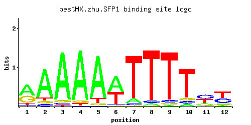

SFP1
YLR403W
Transcription factor that controls expression of ribosome biogenesis genes in response to nutrients and stress, regulates G2/M transitions during mitotic cell cycle and DNA-damage response, modulates cell size; regulated by TORC1 and Mrs6p
Best-performing DNA-binding model.

View and copy the recommended matrices ↘
A | 0.53 0.78 0.90 0.90 0.86 0.54 0.09 0.04 0.02 0.07 0.13 0.08 C | 0.04 0.07 0.04 0.01 0.01 0.03 0.04 0.05 0.05 0.07 0.41 0.35 G | 0.34 0.07 0.05 0.05 0.04 0.02 0.01 0.01 0.04 0.07 0.09 0.10 T | 0.08 0.07 0.02 0.04 0.09 0.41 0.86 0.90 0.90 0.78 0.38 0.46
A | 53 78 90 90 86 54 9 4 2 7 13 8 C | 4 7 4 1 1 3 4 5 5 7 41 35 G | 34 7 5 5 4 2 1 1 4 7 9 10 T | 8 7 2 4 9 41 86 90 90 78 38 46
A | 0.50 0.89 1.03 1.03 0.99 0.52 -1.27 -2.08 -2.77 -1.52 -0.90 -1.39 C | -1.50 -0.94 -1.50 -2.89 -2.89 -1.79 -1.50 -1.28 -1.28 -0.94 0.82 0.66 G | 0.64 -0.94 -1.28 -1.28 -1.50 -2.20 -2.89 -2.89 -1.50 -0.94 -0.69 -0.59 T | -1.39 -1.52 -2.77 -2.08 -1.27 0.25 0.99 1.03 1.03 0.89 0.17 0.36
Alternative candidate matrices 7
Historical matrix candidates from the original ScerTF database. Expand a source to inspect its original logo, scores, and matrix values.
SFP1_AFoat et. al.P = 0.05932View matrix ↘
SFP1_BFoat et. al.P = 7.16e-07View matrix ↘
SFP1_CFoat et. al.P = 1.31e-21View matrix ↘
SFP1_DFoat et. al.P = 0.1353View matrix ↘
SFP1Harbison et. al.P = 4.53e-29View matrix ↘
SFP1Macisaac et. alP = 1.85e-30View matrix ↘
SFP1Zhao and StormoP = 1View matrix ↘
Gene-level annotations and interactions.
Genes bound in ChIP-chip experiments 62 genes
YAL022C, YAR047C, YBR012C, YBR013C, YBR048W, YBR181C, YDL075W, YDL076C, YDL082W, YDL083C, YDL133W, YDR112W, YDR470C, YDR471W, YEL054C, YER078C, YER079W, YER116C, YER117W, YGL030W, YGL031C, YHR013C, YHR014W, YIL133C, YJL034W, YJL035C, YJL092W, YJL093C, YKL161C, YKL178C, YKR053C, YLL043W, YLL045C, YLR192C, YLR351C, YLR352W, YML070W, YML084W, YML085C, YMR316W, YNL096C, YNR041C, YNR043W, YOR032C, YOR070C, YOR116C, YOR117W, YOR119C, YOR120W, YOR134W, YOR138C, YOR140W, YOR391C, YOR393W, YPL018W, YPL019C, YPL034W, YPL143W, YPL152W, YPL153C, YPR102C, YPR103W
Genes affected by TF deletion 1604 genes
YBL113C, YBR034C, YCL050C, YCR012W, YCL055W, YDR064W, YDR432W, YDR370C, YER112W, YER145C, YER118C, YGL199C, YGL171W, YGL234W, YGR278W, YIL078W, YIL142W, YIL080W, YIL144W, YIL148W, YJR016C, YJR048W, YJR018W, YJR050W, YJR054W, YJR087W, YKR014C, YKR077W, YLR244C, YLR216C, YLR246W, YMR041C, YMR012W, YNL016W, YNL079C, YNL050C, YNL052W, YOL043C, YNR061C, YNR063W, YOL017W, YOR191W, YOR193W, YOR257W, YOR195W, YPL174C, YPL205C, YPL209C, YPL180W, YAL005C, YER013W, YKL122C, YAL039C, YBR187W, YBR219C, YBR158W, YBR189W, YBR191W, YDL130W, YDL100C, YDR188W, YDR254W, YEL042W, YFR032C-A, YGL009C, YGL013C, YGR091W, YGR093W, YGR124W, YHR113W, YHR143W, YHR174W, YJL049W, YJL117W, YJL055W, YJL087C, YKL043W, YKL074C, YKL045W, YKL076C, YKL047W, YKL049C, YKL111C, YLR025W, YLR056W, YLR058C, YLR029C, YLR060W, YLR062C, YLR094C, YLR432W, YLR463C, YLR465C, YLR406C, YLR467W, YMR190C, YMR220W, YMR222C, YMR193W, YMR194W, YMR226C, YNL209W, YNL241C, YOR065W, YOR004W, YOR039W, YOR377W, YPL017C, YOR381W, YPL051W, YPL053C, YCR057C, YDR301W, YBR029C, YBR001C, YBR031W, YBL087C, YCL049C, YCR013C, YCR043C, YDR063W, YDR037W, YDR429C, YDR399W, YDR433W, YER111C, YER175C, YER117W, YGR275W, YHL011C, YGR279C, YHL013C, YHL015W, YIL082W, YJR015W, YJR047C, YJR086W, YKR072C, YKR042W, YLR243W, YLR275W, YLR217W, YLR247C, YLR249W, YML113W, YMR015C, YNL047C, YNL082W, YNL053W, YNL084C, YOL042W, YOL044W, YNR060W, YOL014W, YOR224C, YOR194C, YOR258W, YPL173W, YPL204W, YPL206C, YPL177C, YPL240C, YPL242C, YKL203C, YLL048C, YCR097W-A, YKL123W, YAL003W, YAL035C-A, YAL036C, YBR155W, YBR186W, YBR157C, YBR220C, YBR222C, YDL061C, YDL063C, YDL095W, YDR187C, YDR191W, YDR221W, YEL043W, YEL047C, YFR033C, YGL040C, YFR037C, YGL012W, YGL044C, YGR092W, YGR094W, YGR123C, YGR155W, YGR096W, YHR142W, YHR173C, YJL080C, YJL114W, YJL052W, YKL044W, YKL048C, YKL079W, YKL110C, YLR026C, YLR089C, YLR028C, YLR061W, YLR399C, YLR460C, YLR462W, YLR403W, YLR464W, YLR405W, YLR435W, YLR466W, YMR189W, YMR191W, YMR221C, YMR163C, YNL206C, YNL272C, YNL210W, YNL212W, YNL244C, YOR032C, YOR064C, YOR005C, YOR036W, YOR070C, YOR378W, YPL016W, YPL048W, YPL018W, YPL020C, YAL035W, YDR342C, YDR351W, YDR262W, YER011W, YBR092C, YBR066C, YBR130C, YCR106W, YCR076C, YDL003W, YDL005C, YDL037C, YDR158W, YDR130C, YDR162C, YFL045C, YFR009W, YGR005C, YHR051W, YHR081W, YHR025W, YJL018W, YKL012W, YJR145C, YKL014C, YJR116W, YJR147W, YKL016C, YKL018W, YLL003W, YLL034C, YLL066C, YLR338W, YLR309C, YLR340W, YLR372W, YMR071C, YMR073C, YMR134W, YMR075C-A, YMR137C, YNL147W, YOL136C, YOL077C, YOL108C, YOR285W, YOR289W, YOR319W, YPR014C, YPR046W, YPL268W, YPR016C, YPR018W, YPR050C, YPR020W, YOR359W, YPL283C, YBL021C, YBL053W, YAR068W, YBL027W, YBR283C, YBR253W, YBR255W, YBR287W, YBR257W, YCL022C, YDL160C, YDR341C, YDR282C, YDR314C, YER026C, YER055C, YER028C, YER056C-A, YGL071W, YGL103W, YGL135W, YGL105W, YGR244C, YGR182C, YGR214W, YGR186W, YGR250C, YIL015C-A, YHR208W, YIL018W, YHR212C, YIL052C, YJL177W, YKL137W, YKL141W, YLR182W, YLR156W, YML023C, YML054C, YML056C, YML085C, YML027W, YML058C-A, YML087C, YML058W-A, YMR252C, YMR256C, YMR288W, YMR290C, YNL301C, YNL333W, YNL303W, YNL335W, YNL337W, YNR030W, YNL339C, YNR032C-A, YOR101W, YPL078C, YPL142C, YPL080C, YPL112C, YPL144W, YPL116W, YHR023W, YHR183W, YBR063C, YBR093C, YBR125C, YBR065C, YBR095C, YBR127C, YCR107W, YCR077C, YDL004W, YDR157W, YDR461W, YFL038C, YFL013C, YGR060W, YGR032W, YGR034W, YHR021C, YHR022C, YHR026W, YIR002C, YKL011C, YJR144W, YJR117W, YLL029W, YLR367W, YLR337C, YLR369W, YLR339C, YMR070W, YMR100W, YMR131C, YMR135C, YMR075W, YMR136W, YNL146W, YNL178W, YNL116W, YOL073C, YOL105C, YOL139C, YOL109W, YOL141W, YOR316C, YOR320C, YPR013C, YPL267W, YPR015C, YPL269W, YPR049C, YPR051W, YPR137W, YBR282W, YCL012W, YCL016C, YBR256C, YDL191W, YDL161W, YDL225W, YDR309C, YDR338C, YDR279W, YDR313C, YER052C, YER025W, YER056C, YER057C, YGL102C, YGL134W, YGL076C, YGR179C, YGR211W, YGR183C, YGR215W, YGR185C, YIL045W, YIL049W, YHR211W, YIL051C, YJL176C, YJL146W, YJL148W, YKL199C, YLR121C, YLR153C, YLR123C, YLR185W, YML022W, YML024W, YML026C, YML057W, YML086C, YML028W, YMR311C, YMR287C, YMR289W, YNL302C, YNL338W, YOR096W, YPL077C, YPL109C, YPL141C, YPL079W, YPL111W, YPL143W, YPL081W, YGR296W, YBR010W, YCL059C, YCR048W, YCR050C, YDR012W, YDR072C, YER125W, YGR284C, YHR001W-A, YHR005C, YIL118W, YIL150C, YIL090W, YIL092W, YIL124W, YIL156W, YJR024C, YJR094W-A, YKR020W, YKR022C, YKR053C, YLR222C, YLR282C, YLR224W, YLR254C, YLR284C, YLR226W, YLR286C, YLR287C-A, YMR048W, YMR052C-A, YNL061W, YOL019W, YNR067C, YOL023W, YOL054W, YOR263C, YOR201C, YOR233W, YOR203W, YPL213W, YPL245W, YPL215W, YPL217C, YPL250C, YAL015C, YAL044C, YBR163W, YBR195C, YBR227C, YBR199W, YBR233W, YDL070W, YDL074C, YDL136W, YDR196C, YDR224C, YDR226W, YDR202C, YGL047W, YGR099W, YGR160W, YGR130C, YGR162W, YHR121W, YKL113C, YKL054C, YKL056C, YLR033W, YLR064W, YLR035C, YLR068W, YLR038C, YLR102C, YLR439W, YLR441C, YMR168C, YMR228W, YMR230W, YMR172C-A, YMR200W, YMR232W, YMR173W, YNL215W, YNL279W, YNL217W, YNL249C, YNL281W, YNL253W, YOR009W, YOR011W, YOR075W, YOR077W, YOR047C, YOR389W, YPL029W, YPL060W, YPL160W, YBL092W, YBR039W, YBR011C, YCR049C, YDR077W, YDR377W, YER119C, YER152C, YER124C, YER154W, YHL017W, YHL049C, YGR285C, YHR004C, YIL119C, YIL155C, YKR046C, YKR048C, YKR021W, YLR281C, YLR223C, YLR253W, YLR283W, YLR225C, YLR285W, YLR227C, YML120C, YMR049C, YMR021C, YMR023C, YMR052W, YNL023C, YNL055C, YNL059C, YNR064C, YOL018C, YOL050C, YOL052C, YNR070W, YOR196C, YOR260W, YOR230W, YOR262W, YOR264W, YOR202W, YOR234C, YPL181W, YPL183C, YPL214C, YPL246C, YPL184C, YPL216W, YPL249C-A, YJR148W, YAL040C, YAL012W, YAL045C, YBR196C, YBR166C, YBR200W, YDL075W, YDL137W, YDR195W, YGL014W, YGL016W, YGR159C, YGR129W, YHR181W, YJL122W, YKL050C, YKL081W, YLR063W, YLR095C, YLR065C, YLR099C, YLR409C, YLR438W, YMR167W, YMR197C, YMR172W, YMR201C, YNL216W, YNL248C, YNL250W, YNL220W, YNL284C, YOR076C, YOR046C, YPL022W, YPL024W, YPL026C, YPL060C-A, YDR343C, YBR132C, YBR106W, YBR138C, YCR084C, YDL039C, YCR087W, YDL013W, YDR108W, YDR502C, YDR472W, YFL047W, YFR011C, YFL022C, YGR013W, YHR029C, YHR089C, YJL026W, YIR011C, YJR124C, YJR155W, YKL024C, YLR344W, YLR348C, YMR111C, YMR141C, YMR145C, YNL119W, YNL183C, YNL187W, YNL157W, YOL112W, YOL144W, YOL146W, YOL086C, YOL148C, YOL088C, YOR293W, YOR353C, YOR355W, YOR327C, YOR357C, YPR054W, YPR056W, YPL278C, YPR026W, YPR028W, YPR060C, YPR010C, YAR073W, YBL029W, YBL064C, YCL030C, YDL228C, YDL198C, YER036C, YER038C, YGL147C, YGR254W, YGR192C, YIL022W, YHR215W, YHR217C, YJL159W, YJL191W, YKL209C, YKL180W, YLR130C, YLR162W, YLR134W, YLR196W, YML091C, YML034W, YML062C, YML035C-A, YML095C, YMR291W, YMR293C, YMR320W, YMR294W-A, YMR296C, YNL311C, YOR167C, YPL118W, YPL150W, YPL120W, YPL090C, YPL154C, YPL092W, YFL014W, YFR019W, YHR039C, YBR103W, YBR105C, YBR137W, YCR087C-A, YCR088W, YDR167W, YDR471W, YFR012W, YGR038W, YHR058C, YHR090C, YHR032W, YHR062C, YHR092C, YHR064C, YIR004W, YIR035C, YIR037W, YIR010W, YJR119C, YKL021C, YJR123W, YJR154W, YLL004W, YLL067C, YLL039C, YLL041C, YLR312C, YLR347C, YLR379W, YLR349W, YMR077C, YMR108W, YMR138W, YMR079W, YMR110C, YMR142C, YMR083W, YNL118C, YNL182C, YNL156C, YNL188W, YOL143C, YOL113W, YOR294W, YOR324C, YOR296W, YOR356W, YOR298C-A, YPR055W, YPR025C, YPR057W, YPL137C, YOR341W, YNL002C, YAR071W, YBL028C, YAR075W, YBL030C, YBL032W, YBR258C, YCL025C, YCL027W, YBR296C, YDL229W, YDL167C, YDL201W, YGL078C, YGL110C, YGL148W, YGR187C, YGR251W, YGR191W, YHR213W, YIL053W, YIL057C, YHR216W, YJL156C, YJL188C, YJL158C, YJL190C, YKL212W, YKL150W, YKL181W, YKL214C, YLR129W, YLR159W, YLR161W, YML030W, YML090W, YML032C, YML035C, YML063W, YML065W, YMR290W-A, YMR319C, YMR263W, YMR294W, YMR295C, YMR323W, YNR032W, YNR007C, YPL117C, YPL153C, YER060W, YGL062W, YBR048W, YCL067C, YDR020C, YDR052C, YDR382W, YDR384C, YDR418W, YDR450W, YDR452W, YER159C, YER131W, YGL189C, YHL028W, YHR008C, YHR010W, YHL002W, YIL096C, YIL164C, YJR098C, YJR068W, YJR070C, YKR057W, YKR059W, YKR093W, YLR259C, YLR261C, YLR232W, YLR293C, YLR264W, YMR026C, YMR028W, YML133C, YMR061W, YNL065W, YNL067W, YNL069C, YNR077C, YOL002C, YOL033W, YOR207C, YOR271C, YPL252C, YIL114C, YAL023C, YBR207W, YDL082W, YDR264C, YEL026W, YER009W, YFR048W, YGL055W, YGR136W, YGR164W, YKL060C, YKL092C, YKL062W, YLR040C, YLR044C, YLR076C, YLR078C, YLR447C, YLR418C, YLR449W, YLR420W, YLR451W, YMR204C, YMR176W, YMR178W, YMR242C, YNL255C, YNL225C, YNL259C, YNL289W, YOR017W, YOR019W, YOR051C, YOR393W, YPL001W, YPL003W, YPL035C, YPL066W, YPL037C, YDL058W, YDR150W, YEL054C, YCR053W, YDR019C, YDR081C, YDR023W, YDR025W, YDR447C, YDR385W, YDR417C, YER126C, YER156C, YER158C, YER188W, YER190W, YGL245W, YGR293C, YHL027W, YHR007C, YHL001W, YHL031C, YIL127C, YKR056W, YKR088C, YKR029C, YKR092C, YLR288C, YLR260W, YLR231C, YLR262C, YLR292C, YLR233C, YLR294C, YMR025W, YMR027W, YMR056C, YMR029C, YMR058W, YMR031C, YMR060C, YNL031C, YNL064C, YNL096C, YNL066W, YNL098C, YNL100W, YNR072W, YOL057W, YNR074C, YOL059W, YNR076W, YOL030W, YOL061W, YOR270C, YPL220W, YPL251W, YPL226W, YJR127C, YLR084C, YAL049C, YBR236C, YDL081C, YDL143W, YDL083C, YDR233C, YGL054C, YGL056C, YFR051C, YGL026C, YFR053C, YGL028C, YGR106C, YGR163W, YGR108W, YGR137W, YGR109W-A, YGR141W, YHR128W, YHR133C, YHR163W, YJL068C, YJL070C, YJL134W, YKL089W, YKL120W, YKL059C, YKL061W, YKL124W, YKL063C, YKL095W, YLR071C, YLR103C, YLR041W, YLR073C, YLR043C, YLR075W, YLR107W, YLR045C, YLR109W, YLR413W, YLR446W, YLR417W, YLR448W, YML011C, YMR173W-A, YMR203W, YMR205C, YMR209C, YMR241W, YNL254C, YNL224C, YNL258C, YNL260C, YOR080W, YOR050C, YOR022C, YPL061W, YPL063W, YPL002C, YPL034W, YPL067C, YBR084C-A, YDL015C, YDL046W, YCR095C, YDL050C, YDL052C, YDR142C, YDR146C, YDR177W, YDR179C, YFL024C, YFL026W, YFL059W, YGR047C, YHR037W, YHR069C, YJL034W, YJL006C, YJL038C, YJR130C, YKL030W, YKL001C, YJR134C, YKL003C, YLL044W, YLL018C-A, YLR324W, YLR388W, YLR326W, YLR358C, YMR087W, YMR119W, YMR120C, YMR091C, YMR153C-A, YNL127W, YNL197C, YOL120C, YOL124C, YOL126C, YOR300W, YOR361C, YOR367W, YPR004C, YPR068C, YBL068W, YBL072C, YCL038C, YDR353W, YDR323C, YDR298C, YER043C, YER099C, YER072W, YGL091C, YGL123W, YGR260W, YGR264C, YGR234W, YHR219W, YJL193W, YJR007W, YKL153W, YLR136C, YLR198C, YLR168C, YLR170C, YLR172C, YML098W, YML041C, YML043C, YML072C, YMR326C, YMR300C, YMR272C, YMR302C, YMR304C-A, YNR045W, YOR181W, YPL094C, YPL126W, YPL158C, YPL096W, YBR079C, YBR143C, YBR145W, YDL014W, YDL051W, YDR145W, YDR481C, YDR544C, YFL056C, YFL027C, YFR024C, YGR046W, YGR078C, YGR020C, YHR068W, YJR158W, YKL027W, YKL029C, YLR008C, YLL045C, YLL018C, YLR383W, YLR355C, YLR325C, YLR357W, YMR116C, YMR146C, YMR088C, YMR119W-A, YMR121C, YNL126W, YNL160W, YNL162W, YNL164C, YOL089C, YOL119C, YOL121C, YOL155C, YOR330C, YOR360C, YOR304W, YPL281C, YPR061C, YPR031W, YPR033C, YPR003C, YPR035W, YPR067W, YBL006C, YCL037C, YDL241W, YDR321W, YDR354W, YDR295C, YDR324C, YDR297W, YER044C, YGL120C, YGL152C, YGR259C, YGR265W, YHR218W, YIL001W, YIL003W, YIL033C, YIL005W, YJL192C, YJL225C, YJL162C, YJL198W, YJR006W, YKL152C, YKL216W, YKL156W, YKL222C, YLR135W, YLR197W, YLR167W, YLR201C, YLR171W, YLR203C, YML069W, YML042W, YML071C, YML073C, YMR299C, YMR303C, YNR011C, YNR013C, YNR044W, YNR046W, YOR112W, YPL093W, YPL095C, YPL127C, YPL159C, YPL129W, YPL131W, YER091C, YBR054W, YBR056W, YBR026C, YBL111C, YCR034W, YCR069W, YCR072C, YDR058C, YDR458C, YDR460W, YGL191W, YGL225W, YGL256W, YHL004W, YHR018C, YHL009W-A, YHR020W, YIL106W, YIL138C, YJR104C, YJR044C, YKR065C, YKR097W, YKR037C, YKR101W, YLR299W, YLR242C, YMR063W, YMR035W, YMR065W, YMR006C, YNL103W, YNL107W, YNL109W, YOL035C, YOL039W, YOL010W, YOR277C, YOR279C, YOR249C, YPL197C, YPL229W, YPL258C, YPL260W, YEL027W, YAL060W, YAL062W, YBR211C, YBR181C, YBR215W, YBR247C, YBR249C, YDR270W, YDR244W, YEL034W, YEL065W, YEL038W, YGL031C, YGL037C, YGR113W, YGR146C, YGR148C, YGR176W, YHR136C, YHR170W, YHR141C, YJL077C, YJL079C, YKL070W, YKL072W, YLR048W, YLR112W, YLR082C, YLR114C, YLR086W, YLR453C, YML015C, YLR424W, YLR457C, YMR182C, YMR244C-A, YMR184W, YMR186W, YMR188C, YNL233W, YNL265C, YOR025W, YOR057W, YOR027W, YOR059C, YOR091W, YOR093C, YOR063W, YOR095C, YPL007C, YPL070W, YPL011C, YPL074W, YPL045W, YPR106W, YPR137C-A, YPR163C, YPR108W, YPR165W, YBR025C, YBL109W, YCR031C, YDR057W, YDR091C, YDR421W, YDR453C, YER165W, YGL253W, YGL255W, YHL033C, YHL039W, YHR019C, YIL133C, YIL105C, YIL169C, YJR071W, YJR045C, YKR094C, YLR298C, YLR300W, YLR271W, YMR001C, YMR032W, YMR003W, YMR064W, YMR005W, YMR007W, YNL045W, YNL108C, YOL034W, YOL065C, YOL069W, YOL040C, YOR244W, YOR278W, YOR216C, YOR248W, YOR280C, YPL196W, YPL228W, YPL198W, YPL232W, YPL202C, YKL009W, YAL059W, YAL032C, YBR246W, YDL147W, YEL037C, YER019W, YGL030W, YGL032C, YGR143W, YGR173W, YGR118W, YGR149W, YGR177C, YHR197W, YHR137W, YHR169W, YHR201C, YHR203C, YJL136C, YJL138C, YJL140W, YKL067W, YKL100C, YKL071W, YKL102C, YLR079W, YLR049C, YLR113W, YLR083C, YLR117C, YLR452C, YML018C, YMR243C, YMR183C, YMR185W, YMR215W, YMR187C, YMR217W, YMR250W, YNL232W, YNL234W, YNL266W, YOR026W, YOR058C, YPL038W, YPL071C, YPL012W, YDR104C, YBR118W, YDR154C, YDR184C, YDR156W, YDR186C, YFL063W, YFL034C-A, YFR031C-A, YGR085C, YGR027C, YGR087C, YHR046C, YHR076W, YHR111W, YKL005C, YKL006W, YJR141W, YKL041W, YLL024C, YLR023C, YLR360W, YLR330W, YLR362W, YMR093W, YMR097C, YNL171C, YNL141W, YOL100W, YOL102C, YOR369C, YOR309C, YOR371C, YOR373W, YOR375C, YPR038W, YPR074C, YPR012W, YPR044C, YBL076C, YCL040W, YCL009C, YDL182W, YDL184C, YDR329C, YER048C, YGL095C, YGR204W, YGR240C, YGR274C, YIL008W, YIL011W, YJR009C, YKL192C, YLR174W, YLR148W, YLR150W, YLR180W, YLR212C, YML106W, YML110C, YMR276W, YMR305C, YNL008C, YNL010W, YMR308C, YMR282C, YMR310C, YNL014W, YNL325C, YNR049C, YNR020C, YNL329C, YNR053C, YNL331C, YNR055C, YOR189W, YPL102C, YPL168W, YPL138C, YPL170W, YBR086C, YBR121C, YCR102C, YDR119W, YFL064C, YFR027W, YFL068W, YGR054W, YHR104W, YHR108W, YJR135C, YJR136C, YKL040C, YLL019C, YLL051C, YLL053C, YLR022C, YLR361C, YLR333C, YLR397C, YMR123W, YMR094W, YMR096W, YMR127C, YMR098C, YNL166C, YNL136W, YNL140C, YOL097C, YOL127W, YOL099C, YOL101C, YOL165C, YOR338W, YOR308C, YOR340C, YOR370C, YOR310C, YOR342C, YOR312C, YPR037C, YPR069C, YPR039W, YPR041W, YPR043W, YPR075C, YBL077W, YBL081W, YCL041C, YBR278W, YCL008C, YCL043C, YDR362C, YER073W, YER102W, YER050C, YER079W, YGL130W, YGL162W, YGR235C, YGR207C, YIL069C, YIL009C-A, YJL200C, YJR010C-A, YJL172W, YLR205C, YLR175W, YLR207W, YLR149C, YML046W, YML049C, YML109W, YMR277W, YMR306C-A, YNL009W, YMR309C, YNR017W, YNR048W, YNL328C, YNR021W, YNL330C, YNR023W, YOR182C, YPL101W, YPL133C, YPL105C, YPL107W, YPL139C, YIL115C
Genes supported by both experiments 24 genes
YBR048W, YBR181C, YDL075W, YDL082W, YDL083C, YDR471W, YEL054C, YER079W, YER117W, YGL030W, YGL031C, YIL133C, YJL034W, YKR053C, YLL045C, YML085C, YNL096C, YOR032C, YOR070C, YOR393W, YPL018W, YPL034W, YPL143W, YPL153C
Predicted TF–TF partners 3 genes
AFT2, FHL1, RAP1